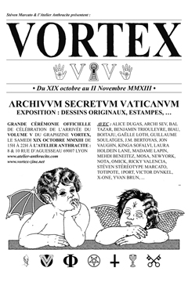
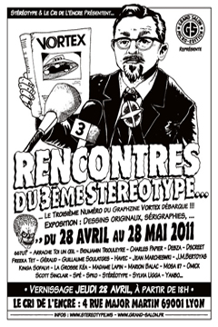
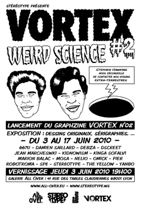
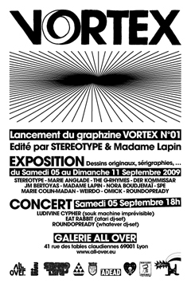

|

Exposition du 19 octobre au 2 novembre 2013. |

Exposition du 28 avril au 28 mai 2011. Dessins originaux, sérigraphies, gravures, peintures, … Le cri de l'encre : 4 rue du Major Martin 69001 Lyon FRANCE http://www.lecridelencre.com/ |

Exposition du 3 au 17 juin 2010. |
|

Exposition du 5 au 11 septembre 2009. |
© COPYLEFT 2011 STEREOTYPE. ALL RIGHTS RESERVED. Code Fanelie PIERI